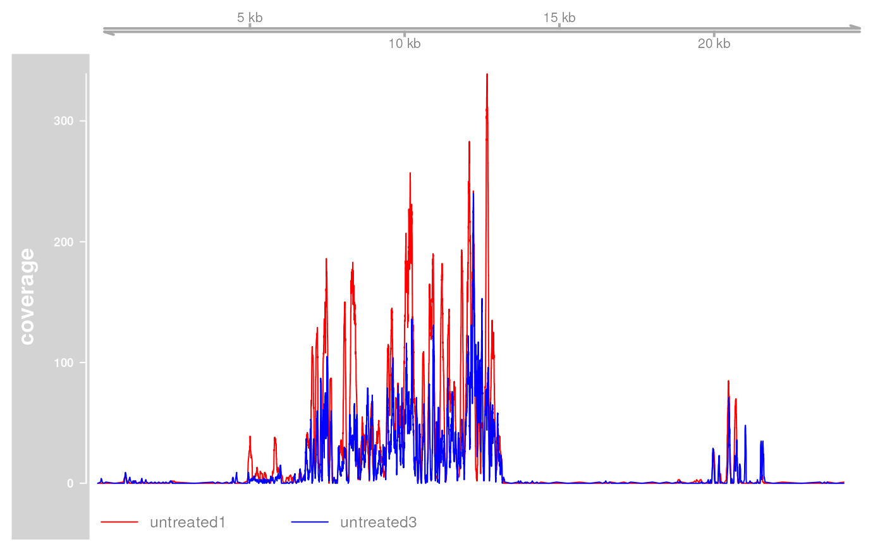
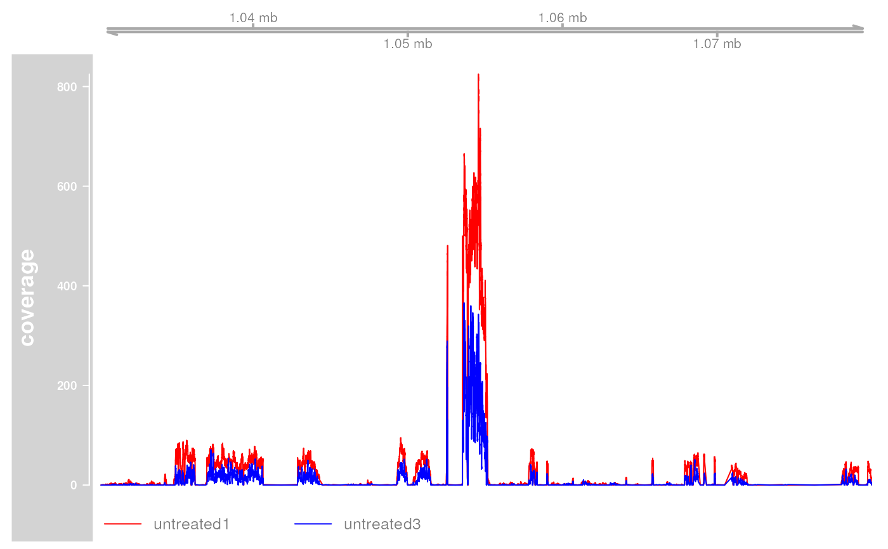

genomicvars.RdA genomic variable is a variable defined along a genome. Here are 2 ways a genomic variable is generally represented in Bioconductor:
as a named RleList object with one list element per chromosome;
as a metadata column on a disjoint GRanges object.
This man page documents tools for switching from one form to the other.
bindAsGRanges(...)
mcolAsRleList(x, varname)
binnedAverage(bins, numvar, varname, na.rm=FALSE)One or more genomic variables in the form of named RleList objects.
A disjoint GRanges object with metadata columns on it.
A GRanges object is said to be disjoint if it contains
ranges that do not overlap with each other. This can be tested with
isDisjoint. See ?`isDisjoint,GenomicRanges-method`
for more information about the isDisjoint method for
GRanges objects.
The name of the genomic variable.
For mcolAsRleList this must be the name of the metadata column
on x to be turned into an RleList object.
For binnedAverage this will be the name of the metadata column
that contains the binned average in the returned object.
A GRanges object representing the genomic bins. Typically
obtained by calling tileGenome with
cut.last.tile.in.chrom=TRUE.
A named RleList object representing a numerical variable
defined along the genome covered by bins (which is the genome
described by seqinfo(bins)).
A logical value indicating whether NA values should be
stripped before the average is computed.
bindAsGRanges allows to switch the representation of one or
more genomic variables from the named RleList form to the
metadata column on a disjoint GRanges object form by binding
the supplied named RleList objects together and putting them
on the same GRanges object. This transformation is lossless.
mcolAsRleList performs the opposite transformation and is also
lossless (however the circularity flags and genome information in
seqinfo(x) won't propagate). It works for any metadata column on
x that can be put in Rle form i.e. that is an
atomic vector or a factor.
binnedAverage computes the binned average of a numerical variable
defined along a genome.
For bindAsGRanges: a GRanges object with 1 metadata column
per supplied genomic variable.
For mcolAsRleList: a named RleList object with
1 list element per seqlevel in x.
For binnedAverage: input GRanges object bins with
an additional metadata column named varname containing the binned
average.
RleList objects in the IRanges package.
coverage,GenomicRanges-method for computing the coverage of a GRanges object.
The tileGenome function for putting tiles on a
genome.
GRanges objects and isDisjoint,GenomicRanges-method
for the isDisjoint method for GenomicRanges objects.
## ---------------------------------------------------------------------
## A. TWO WAYS TO REPRESENT A GENOMIC VARIABLE
## -----------------------------------------------------------------
## 1) As a named RleList object
## ----------------------------
## Let's create a genomic variable in the "named RleList" form:
library(BSgenome.Scerevisiae.UCSC.sacCer2)
set.seed(55)
my_var <- RleList(
lapply(seqlengths(Scerevisiae),
function(seqlen) {
tmp <- sample(50L, seqlen, replace=TRUE)
Rle(cumsum(tmp - rev(tmp)))
}
),
compress=FALSE)
my_var
#> RleList of length 18
#> $chrI
#> integer-Rle of length 230208 with 225554 runs
#> Lengths: 1 1 1 1 1 1 1 1 ... 1 1 1 1 1 1 1 1
#> Values : -1 2 45 7 15 25 74 59 ... 74 25 15 7 45 2 -1 0
#>
#> $chrII
#> integer-Rle of length 813178 with 796736 runs
#> Lengths: 1 1 1 1 1 1 1 ... 1 1 1 1 1 1
#> Values : -44 -66 -75 -87 -88 -80 -109 ... -88 -87 -75 -66 -44 0
#>
#> $chrIII
#> integer-Rle of length 316617 with 310186 runs
#> Lengths: 1 1 1 1 1 1 1 1 ... 1 1 1 1 1 1 1 1
#> Values : -30 -33 -25 -50 -25 -37 -2 -44 ... -2 -37 -25 -50 -25 -33 -30 0
#>
#> $chrIV
#> integer-Rle of length 1531919 with 1501028 runs
#> Lengths: 1 1 1 1 1 1 1 ... 1 1 1 1 1 1
#> Values : 28 61 22 41 80 47 70 ... 80 41 22 61 28 0
#>
#> $chrV
#> integer-Rle of length 576869 with 565604 runs
#> Lengths: 1 1 1 1 1 1 1 1 ... 1 1 1 1 1 1 1 1
#> Values : 5 19 -11 -29 -24 -13 -10 -21 ... -10 -13 -24 -29 -11 19 5 0
#>
#> ...
#> <13 more elements>
## 2) As a metadata column on a disjoint GRanges object
## ----------------------------------------------------
gr1 <- bindAsGRanges(my_var=my_var)
gr1
#> GRanges object with 11919506 ranges and 1 metadata column:
#> seqnames ranges strand | my_var
#> <Rle> <IRanges> <Rle> | <integer>
#> [1] chrI 1 * | -1
#> [2] chrI 2 * | 2
#> [3] chrI 3 * | 45
#> [4] chrI 4 * | 7
#> [5] chrI 5 * | 15
#> ... ... ... ... . ...
#> [11919502] 2micron 6313 * | 61
#> [11919503] 2micron 6314 * | 37
#> [11919504] 2micron 6315 * | 12
#> [11919505] 2micron 6316-6317 * | 10
#> [11919506] 2micron 6318 * | 0
#> -------
#> seqinfo: 18 sequences from an unspecified genome
gr2 <- GRanges(c("chrI:1-150",
"chrI:211-285",
"chrI:291-377",
"chrV:51-60"),
score=c(0.4, 8, -10, 2.2),
id=letters[1:4],
seqinfo=seqinfo(Scerevisiae))
gr2
#> GRanges object with 4 ranges and 2 metadata columns:
#> seqnames ranges strand | score id
#> <Rle> <IRanges> <Rle> | <numeric> <character>
#> [1] chrI 1-150 * | 0.4 a
#> [2] chrI 211-285 * | 8.0 b
#> [3] chrI 291-377 * | -10.0 c
#> [4] chrV 51-60 * | 2.2 d
#> -------
#> seqinfo: 18 sequences (2 circular) from sacCer2 genome
## Going back to the "named RleList" form:
mcolAsRleList(gr1, "my_var")
#> RleList of length 18
#> $chrI
#> integer-Rle of length 230208 with 225554 runs
#> Lengths: 1 1 1 1 1 1 1 1 ... 1 1 1 1 1 1 1 1
#> Values : -1 2 45 7 15 25 74 59 ... 74 25 15 7 45 2 -1 0
#>
#> $chrII
#> integer-Rle of length 813178 with 796736 runs
#> Lengths: 1 1 1 1 1 1 1 ... 1 1 1 1 1 1
#> Values : -44 -66 -75 -87 -88 -80 -109 ... -88 -87 -75 -66 -44 0
#>
#> $chrIII
#> integer-Rle of length 316617 with 310186 runs
#> Lengths: 1 1 1 1 1 1 1 1 ... 1 1 1 1 1 1 1 1
#> Values : -30 -33 -25 -50 -25 -37 -2 -44 ... -2 -37 -25 -50 -25 -33 -30 0
#>
#> $chrIV
#> integer-Rle of length 1531919 with 1501028 runs
#> Lengths: 1 1 1 1 1 1 1 ... 1 1 1 1 1 1
#> Values : 28 61 22 41 80 47 70 ... 80 41 22 61 28 0
#>
#> $chrV
#> integer-Rle of length 576869 with 565604 runs
#> Lengths: 1 1 1 1 1 1 1 1 ... 1 1 1 1 1 1 1 1
#> Values : 5 19 -11 -29 -24 -13 -10 -21 ... -10 -13 -24 -29 -11 19 5 0
#>
#> ...
#> <13 more elements>
score <- mcolAsRleList(gr2, "score")
score
#> RleList of length 18
#> $chrI
#> numeric-Rle of length 230208 with 6 runs
#> Lengths: 150 60 75 5 87 229831
#> Values : 0.4 NA 8.0 NA -10.0 NA
#>
#> $chrII
#> numeric-Rle of length 813178 with 1 run
#> Lengths: 813178
#> Values : NA
#>
#> $chrIII
#> numeric-Rle of length 316617 with 1 run
#> Lengths: 316617
#> Values : NA
#>
#> $chrIV
#> numeric-Rle of length 1531919 with 1 run
#> Lengths: 1531919
#> Values : NA
#>
#> $chrV
#> numeric-Rle of length 576869 with 3 runs
#> Lengths: 50 10 576809
#> Values : NA 2.2 NA
#>
#> ...
#> <13 more elements>
id <- mcolAsRleList(gr2, "id")
id
#> RleList of length 18
#> $chrI
#> character-Rle of length 230208 with 6 runs
#> Lengths: 150 60 75 5 87 229831
#> Values : "a" "NA" "b" "NA" "c" "NA"
#>
#> $chrII
#> character-Rle of length 813178 with 1 run
#> Lengths: 813178
#> Values : "NA"
#>
#> $chrIII
#> character-Rle of length 316617 with 1 run
#> Lengths: 316617
#> Values : "NA"
#>
#> $chrIV
#> character-Rle of length 1531919 with 1 run
#> Lengths: 1531919
#> Values : "NA"
#>
#> $chrV
#> character-Rle of length 576869 with 3 runs
#> Lengths: 50 10 576809
#> Values : "NA" "d" "NA"
#>
#> ...
#> <13 more elements>
bindAsGRanges(score=score, id=id)
#> GRanges object with 4 ranges and 2 metadata columns:
#> seqnames ranges strand | score id
#> <Rle> <IRanges> <Rle> | <numeric> <character>
#> [1] chrI 1-150 * | 0.4 a
#> [2] chrI 211-285 * | 8.0 b
#> [3] chrI 291-377 * | -10.0 c
#> [4] chrV 51-60 * | 2.2 d
#> -------
#> seqinfo: 18 sequences from an unspecified genome
## Bind 'my_var', 'score', and 'id' together:
gr3 <- bindAsGRanges(my_var=my_var, score=score, id=id)
## Sanity checks:
stopifnot(identical(my_var, mcolAsRleList(gr3, "my_var")))
stopifnot(identical(score, mcolAsRleList(gr3, "score")))
stopifnot(identical(id, mcolAsRleList(gr3, "id")))
gr2b <- bindAsGRanges(score=score, id=id)
seqinfo(gr2b) <- seqinfo(gr2)
stopifnot(identical(gr2, gr2b))
## ---------------------------------------------------------------------
## B. BIND TOGETHER THE COVERAGES OF SEVERAL BAM FILES
## ---------------------------------------------------------------------
library(pasillaBamSubset)
library(GenomicAlignments)
untreated1_cvg <- coverage(BamFile(untreated1_chr4()))
untreated3_cvg <- coverage(BamFile(untreated3_chr4()))
all_cvg <- bindAsGRanges(untreated1=untreated1_cvg,
untreated3=untreated3_cvg)
## Keep regions with coverage:
all_cvg[with(mcols(all_cvg), untreated1 + untreated3 >= 1)]
#> GRanges object with 172444 ranges and 2 metadata columns:
#> seqnames ranges strand | untreated1 untreated3
#> <Rle> <IRanges> <Rle> | <integer> <integer>
#> [1] chr4 169-183 * | 0 1
#> [2] chr4 184-186 * | 0 2
#> [3] chr4 187-192 * | 0 3
#> [4] chr4 193-205 * | 0 4
#> [5] chr4 206-220 * | 0 3
#> ... ... ... ... . ... ...
#> [172440] chr4 1349708-1349744 * | 0 1
#> [172441] chr4 1349838-1349874 * | 0 1
#> [172442] chr4 1350124-1350198 * | 1 0
#> [172443] chr4 1351640-1351676 * | 0 2
#> [172444] chr4 1351760-1351796 * | 0 1
#> -------
#> seqinfo: 8 sequences from an unspecified genome
## Plot the coverage profiles with the Gviz package:
library(Gviz)
#> Loading required package: grid
#>
#> Attaching package: ‘grid’
#> The following object is masked from ‘package:Biostrings’:
#>
#> pattern
plotNumvars <- function(numvars, region, name="numvars", ...)
{
stopifnot(is(numvars, "GRanges"))
stopifnot(is(region, "GRanges"), length(region) == 1L)
gtrack <- GenomeAxisTrack()
dtrack <- DataTrack(numvars,
chromosome=as.character(seqnames(region)),
name=name,
groups=colnames(mcols(numvars)), type="l", ...)
plotTracks(list(gtrack, dtrack), from=start(region), to=end(region))
}
plotNumvars(all_cvg, GRanges("chr4:1-25000"),
"coverage", col=c("red", "blue"))

plotNumvars(all_cvg, GRanges("chr4:1.03e6-1.08e6"),
"coverage", col=c("red", "blue"))

## Sanity checks:
stopifnot(identical(untreated1_cvg, mcolAsRleList(all_cvg, "untreated1")))
stopifnot(identical(untreated3_cvg, mcolAsRleList(all_cvg, "untreated3")))
## ---------------------------------------------------------------------
## C. COMPUTE THE BINNED AVERAGE OF A NUMERICAL VARIABLE DEFINED ALONG A
## GENOME
## ---------------------------------------------------------------------
## In some applications (e.g. visualization), there is the need to compute
## the average of a genomic variable for a set of predefined fixed-width
## regions (sometimes called "bins").
## Let's use tileGenome() to create such a set of bins:
bins1 <- tileGenome(seqinfo(Scerevisiae), tilewidth=100,
cut.last.tile.in.chrom=TRUE)
## Compute the binned average for 'my_var' and 'score':
bins1 <- binnedAverage(bins1, my_var, "binned_var")
bins1
#> GRanges object with 121639 ranges and 1 metadata column:
#> seqnames ranges strand | binned_var
#> <Rle> <IRanges> <Rle> | <numeric>
#> [1] chrI 1-100 * | 116.09
#> [2] chrI 101-200 * | 49.50
#> [3] chrI 201-300 * | -73.21
#> [4] chrI 301-400 * | -87.79
#> [5] chrI 401-500 * | -237.83
#> ... ... ... ... . ...
#> [121635] 2micron 5901-6000 * | -22.8100
#> [121636] 2micron 6001-6100 * | -139.9400
#> [121637] 2micron 6101-6200 * | -152.5100
#> [121638] 2micron 6201-6300 * | -118.0500
#> [121639] 2micron 6301-6318 * | 19.9444
#> -------
#> seqinfo: 18 sequences (2 circular) from sacCer2 genome
bins1 <- binnedAverage(bins1, score, "binned_score")
bins1
#> GRanges object with 121639 ranges and 2 metadata columns:
#> seqnames ranges strand | binned_var binned_score
#> <Rle> <IRanges> <Rle> | <numeric> <numeric>
#> [1] chrI 1-100 * | 116.09 0.4
#> [2] chrI 101-200 * | 49.50 NA
#> [3] chrI 201-300 * | -73.21 NA
#> [4] chrI 301-400 * | -87.79 NA
#> [5] chrI 401-500 * | -237.83 NA
#> ... ... ... ... . ... ...
#> [121635] 2micron 5901-6000 * | -22.8100 NA
#> [121636] 2micron 6001-6100 * | -139.9400 NA
#> [121637] 2micron 6101-6200 * | -152.5100 NA
#> [121638] 2micron 6201-6300 * | -118.0500 NA
#> [121639] 2micron 6301-6318 * | 19.9444 NA
#> -------
#> seqinfo: 18 sequences (2 circular) from sacCer2 genome
## Binned average in "named RleList" form:
binned_var1 <- mcolAsRleList(bins1, "binned_var")
binned_var1
#> RleList of length 18
#> $chrI
#> numeric-Rle of length 230208 with 2303 runs
#> Lengths: 100 100 100 ... 100 100 8
#> Values : 116.09 49.50 -73.21 ... 40.820 121.380 20.875
#>
#> $chrII
#> numeric-Rle of length 813178 with 8130 runs
#> Lengths: 100 100 100 ... 100 78
#> Values : -18.67 -15.24 117.78 ... -5.6000 -31.5769
#>
#> $chrIII
#> numeric-Rle of length 316617 with 3167 runs
#> Lengths: 100 100 100 100 ... 100 100 100 17
#> Values : -39.47 116.38 602.63 575.06 ... 607.42 201.22 -36.86 -37.00
#>
#> $chrIV
#> numeric-Rle of length 1531919 with 15320 runs
#> Lengths: 100 100 100 ... 100 100 19
#> Values : -50.99 -129.32 -250.85 ... -167.8100 -74.6000 46.4737
#>
#> $chrV
#> numeric-Rle of length 576869 with 5769 runs
#> Lengths: 100 100 100 ... 100 69
#> Values : 74.99 213.35 221.21 ... 202.32000 -4.02899
#>
#> ...
#> <13 more elements>
stopifnot(all.equal(mean(my_var), mean(binned_var1))) # sanity check
mcolAsRleList(bins1, "binned_score")
#> RleList of length 18
#> $chrI
#> numeric-Rle of length 230208 with 2 runs
#> Lengths: 100 230108
#> Values : 0.4 NA
#>
#> $chrII
#> numeric-Rle of length 813178 with 1 run
#> Lengths: 813178
#> Values : NA
#>
#> $chrIII
#> numeric-Rle of length 316617 with 1 run
#> Lengths: 316617
#> Values : NA
#>
#> $chrIV
#> numeric-Rle of length 1531919 with 1 run
#> Lengths: 1531919
#> Values : NA
#>
#> $chrV
#> numeric-Rle of length 576869 with 1 run
#> Lengths: 576869
#> Values : NA
#>
#> ...
#> <13 more elements>
## With bigger bins:
bins2 <- tileGenome(seqinfo(Scerevisiae), tilewidth=50000,
cut.last.tile.in.chrom=TRUE)
bins2 <- binnedAverage(bins2, my_var, "binned_var")
bins2 <- binnedAverage(bins2, score, "binned_score")
bins2
#> GRanges object with 251 ranges and 2 metadata columns:
#> seqnames ranges strand | binned_var binned_score
#> <Rle> <IRanges> <Rle> | <numeric> <numeric>
#> [1] chrI 1-50000 * | -5220.50 NA
#> [2] chrI 50001-100000 * | -2804.24 NA
#> [3] chrI 100001-150000 * | -1930.65 NA
#> [4] chrI 150001-200000 * | -4453.76 NA
#> [5] chrI 200001-230208 * | -4464.44 NA
#> ... ... ... ... . ... ...
#> [247] chrXVI 850001-900000 * | -2581.0233 NA
#> [248] chrXVI 900001-948062 * | 1690.1346 NA
#> [249] chrM 1-50000 * | 6994.8881 NA
#> [250] chrM 50001-85779 * | 4941.6114 NA
#> [251] 2micron 1-6318 * | -99.1627 NA
#> -------
#> seqinfo: 18 sequences (2 circular) from sacCer2 genome
binned_var2 <- mcolAsRleList(bins2, "binned_var")
binned_var2
#> RleList of length 18
#> $chrI
#> numeric-Rle of length 230208 with 5 runs
#> Lengths: 50000 50000 50000 50000 30208
#> Values : -5220.50 -2804.24 -1930.65 -4453.76 -4464.44
#>
#> $chrII
#> numeric-Rle of length 813178 with 17 runs
#> Lengths: 50000 50000 50000 ... 50000 50000 13178
#> Values : -3667.309 -3826.696 -6538.148 ... -4644.398 -4006.243 -1395.270
#>
#> $chrIII
#> numeric-Rle of length 316617 with 7 runs
#> Lengths: 50000 50000 50000 50000 50000 50000 16617
#> Values : 2280.46 1546.51 3634.80 4309.38 1087.27 2389.96 1972.61
#>
#> $chrIV
#> numeric-Rle of length 1531919 with 31 runs
#> Lengths: 50000 50000 50000 ... 50000 31919
#> Values : -1317.1534 -2644.7133 -1023.4361 ... -2957.7739 -865.8289
#>
#> $chrV
#> numeric-Rle of length 576869 with 12 runs
#> Lengths: 50000 50000 50000 ... 50000 50000 26869
#> Values : 3320.706 8119.092 4590.936 ... 6386.096 7072.693 1317.832
#>
#> ...
#> <13 more elements>
stopifnot(all.equal(mean(my_var), mean(binned_var2))) # sanity check
mcolAsRleList(bins2, "binned_score")
#> RleList of length 18
#> $chrI
#> numeric-Rle of length 230208 with 1 run
#> Lengths: 230208
#> Values : NA
#>
#> $chrII
#> numeric-Rle of length 813178 with 1 run
#> Lengths: 813178
#> Values : NA
#>
#> $chrIII
#> numeric-Rle of length 316617 with 1 run
#> Lengths: 316617
#> Values : NA
#>
#> $chrIV
#> numeric-Rle of length 1531919 with 1 run
#> Lengths: 1531919
#> Values : NA
#>
#> $chrV
#> numeric-Rle of length 576869 with 1 run
#> Lengths: 576869
#> Values : NA
#>
#> ...
#> <13 more elements>
## Not surprisingly, the "binned" variables are much more compact in
## memory than the original variables (they contain much less runs):
object.size(my_var)
#> 95379608 bytes
object.size(binned_var1)
#> 1483224 bytes
object.size(binned_var2)
#> 27072 bytes
## ---------------------------------------------------------------------
## D. SANITY CHECKS
## ---------------------------------------------------------------------
bins3 <- tileGenome(c(chr1=10, chr2=8), tilewidth=5,
cut.last.tile.in.chrom=TRUE)
my_var3 <- RleList(chr1=Rle(c(1:3, NA, 5:7)), chr2=Rle(c(-3, NA, -3, NaN)))
bins3 <- binnedAverage(bins3, my_var3, "binned_var3", na.rm=TRUE)
binned_var3 <- mcols(bins3)$binned_var3
stopifnot(
identical(mean(my_var3$chr1[1:5], na.rm=TRUE),
binned_var3[1]),
identical(mean(c(my_var3$chr1, 0, 0, 0)[6:10], na.rm=TRUE),
binned_var3[2]),
#identical(mean(c(my_var3$chr2, 0), na.rm=TRUE),
# binned_var3[3]),
identical(0, binned_var3[4])
)